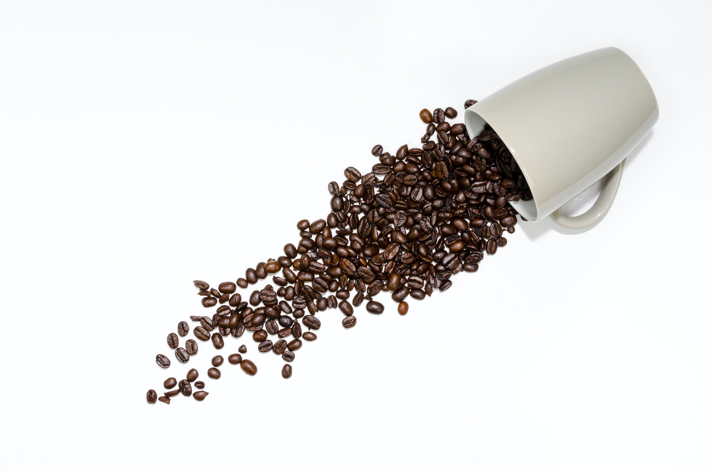

دائما يتم شحن منتجاتنا الطازجة مباشرة من المصنع
ترسل منتجاتنا في عبوات خاصة توفر الحماية الكاملة ضد الحرارة والتأثيرات الخارجية
أدخل رقم هاتفك في ملف تعريف الخاص بك واكسب النقاط لكل طلبية


هو نوع من أنواع القهوة التي يمزج معها الحليب وقد اخترعها الإيطاليون، توجد في المقاهي وتزين بأنواع من التزيينات مثل الرغوة أو الكريمة. قد تقدم في أكواب كبيرة، وتُزين أحيانا ببودرة الكاكاو ويقدم معها السكر. الكابتشينو غني بالسعرات الحرارية إذ إن كل كوب يحتوي على 300 سعرات حرارية تقريباً وذلك يعود إلى نسبة الكاربوهيدرات المرتفعة في الكريمة والسكر التي يحضّر منها.


القهوة مشروب يعد من بذور البن المحمصة، وينمو في أكثر من 70 بلداً. خصوصًا ضمن المناطق الاستوائية في أمريكا الشمالية والجنوبية وجنوب شرق آسيا وشبه القارة الهندية وأفريقيا. ويعتبر البن الأخضر هو ثاني أكثر السلع تداولاً في العالم بعد النفط الخام. ونظراً لاحتوائها على الكافيين، يمكن أن يكون للقهوة تأثير منبه للبشر. تعتبر القهوة في يومنا الحالي واحدة من المشروبات الأكثر شعبية في جميع أنحاء العالم.


القهوة التركية هو نوع من القهوة تُعد باستخدام حبوب البن المطحونة بدقة شديدة دون تصفية. تشير القهوة التركية إلى طريقة لتخمير البن المطحون جيدًا. تعتبر أصناف أرابيكا هي الأفضل، ولكن يتم أيضًا استخدام روبوستا أو مزيج منهما. حيث تطحن الحبوب إلى مسحوق ناعم جدًا، والذي يترك في القهوة عند تقديمه. على الرغم من أن كلمة قهوة ذات أصل عربي، إلا أن ثقافة المقاهي قد ظهرت أيام الدولة العثمانية حينما كانت هذه هي الطريقة الرائجة لتحضير القهوة.
هو نوع من أنواع القهوة التي يمزج معها الحليب وقد اخترعها الإيطاليون، توجد في المقاهي وتزين بأنواع من التزيينات مثل الرغوة أو الكريمة. قد تقدم في أكواب كبيرة، وتُزين أحيانا ببودرة الكاكاو ويقدم معها السكر. الكابتشينو غني بالسعرات الحرارية إذ إن كل كوب يحتوي على 300 سعرات حرارية تقريباً وذلك يعود إلى نسبة الكاربوهيدرات المرتفعة في الكريمة والسكر التي يحضّر منها.
القهوة مشروب يعد من بذور البن المحمصة، وينمو في أكثر من 70 بلداً. خصوصًا ضمن المناطق الاستوائية في أمريكا الشمالية والجنوبية وجنوب شرق آسيا وشبه القارة الهندية وأفريقيا. ويعتبر البن الأخضر هو ثاني أكثر السلع تداولاً في العالم بعد النفط الخام. ونظراً لاحتوائها على الكافيين، يمكن أن يكون للقهوة تأثير منبه للبشر. تعتبر القهوة في يومنا الحالي واحدة من المشروبات الأكثر شعبية في جميع أنحاء العالم.
القهوة التركية هو نوع من القهوة تُعد باستخدام حبوب البن المطحونة بدقة شديدة دون تصفية. تشير القهوة التركية إلى طريقة لتخمير البن المطحون جيدًا. تعتبر أصناف أرابيكا هي الأفضل، ولكن يتم أيضًا استخدام روبوستا أو مزيج منهما. حيث تطحن الحبوب إلى مسحوق ناعم جدًا، والذي يترك في القهوة عند تقديمه. على الرغم من أن كلمة قهوة ذات أصل عربي، إلا أن ثقافة المقاهي قد ظهرت أيام الدولة العثمانية حينما كانت هذه هي الطريقة الرائجة لتحضير القهوة.